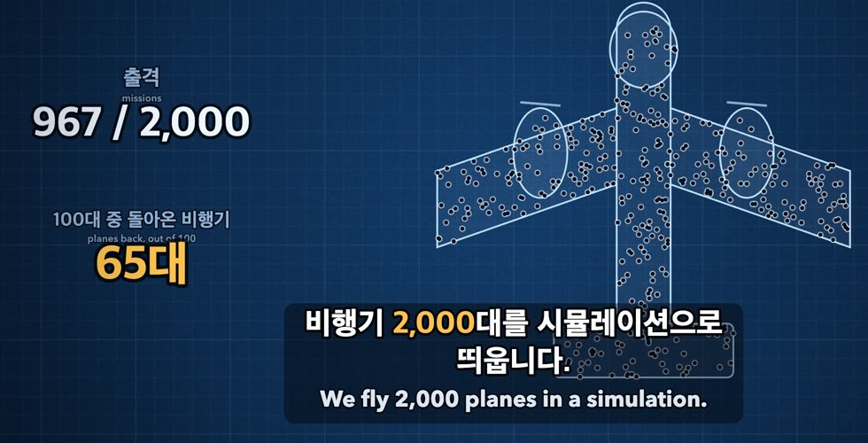
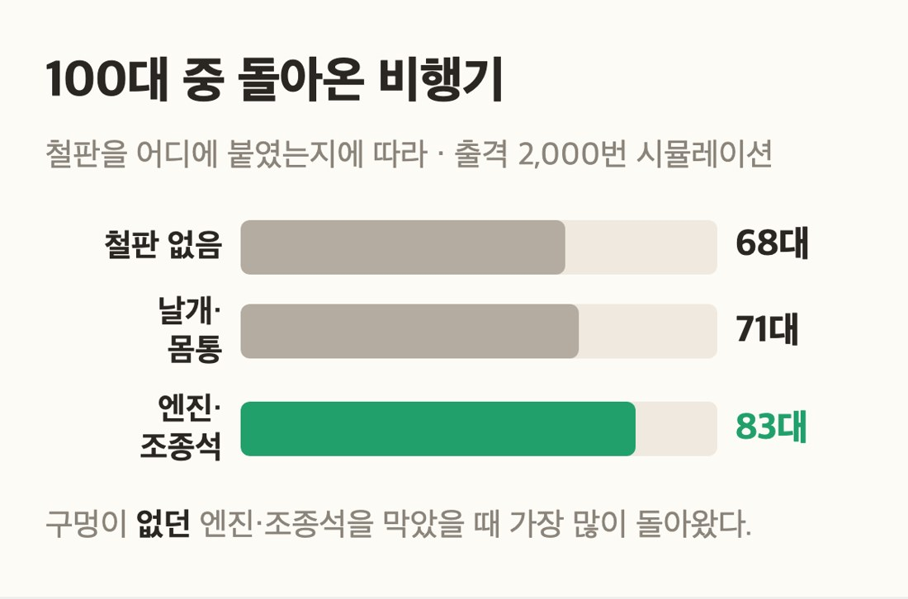
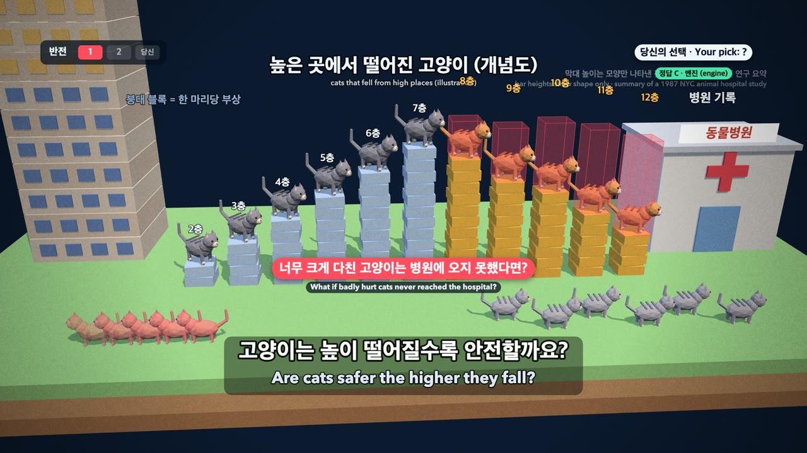

성공한 사람 말만 들으면 속는 이유 — 돌아온 폭격기의 총알 구멍(생존자 편향)
보이지 않는 사람들이 이야기의 절반이다
성공한 사람의 이야기를 들으면 마음이 두 갈래로 갈라진다. 하나는 "나도 저렇게 하면 되겠구나" 하는 설렘. 다른 하나는 "나는 왜 아직 저기까지 못 갔지" 하는 조급함.
새벽 다섯 시에 일어났다는 사람. 하루도 빠짐없이 썼다는 사람. 모두가 말려도 버텼다는 사람. 이야기를 다 듣고 나면 이상하게 내 하루가 초라해진다. 나는 다섯 시에 못 일어났고, 가끔 빼먹었고, 몇 번은 그만두었으니까.
그 조급함은 늘 같은 결론으로 끝났다. 내가 부족했구나.
그런데 어느 밤 문득 궁금해졌다. 새벽 다섯 시에 일어나고도 잘 안 된 사람들은, 다 어디에 있을까. 왜 그들의 이야기는 한 번도 들어 본 적이 없을까.
그 질문의 답을, 뜻밖에도 80년 전 전쟁터의 비행기들이 알고 있었다.
· · ·
돌아온 비행기
1943년. 당신은 공군 책임자다.
전쟁터에서 돌아온 폭격기들이 활주로에 줄지어 서 있다. 날개와 몸통은 총알 구멍투성이다. 엔진 쪽은 이상할 만큼 깨끗하다.
철판은 무겁다. 비행기 전체를 두를 수는 없다. 딱 두 곳만 덧댈 수 있다면, 어디를 막겠는가.

잠깐 스크롤을 멈추고 골라 보자. 날개? 몸통? 엔진?
구멍이 가장 많은 날개와 몸통.
거의 모든 사람이 그렇게 답한다. 나도 그랬다. 궁금한 건 못 참는 성격이라, 직접 확인해 보기로 했다.
· · ·
2,000번 띄워 보았다
컴퓨터 속에서 폭격기 2,000대를 띄웠다. 한 대에 평균 세 발씩, 총알이 무작위로 박힌다. 어디에 맞았느냐에 따라 돌아오기도 하고, 돌아오지 못하기도 한다.

그리고 철판을 붙이는 곳만 바꿔 가며 몇 대가 돌아오는지 셌다. 100대가 출격했을 때,
- 철판이 없으면 68대.
- 구멍이 많은 날개와 몸통에 붙이면 71대.
- 구멍이 거의 없던 엔진과 조종석에 붙이면 83대.

결과를 보고 나는 잠깐 멍해졌다. 구멍이 없는 곳을 막았더니 가장 많이 돌아왔다.
이유는 단순했다. 엔진에 구멍이 없었던 건, 엔진에 맞은 비행기가 돌아오지 못했기 때문이다. 활주로의 구멍 지도는 "맞아도 버틸 수 있는 곳"의 지도였다. 정말 위험한 곳은 지도에서 비어 있었다.
통계학자 에이브러햄 월드가 짚은 것이 바로 이 빈칸이었다. 구멍이 많은 곳이 아니라, 구멍이 없는 곳을 막으라고.
정말 그럴까? 철판 위치를 바꿔 가며 직접 확인해 보자.
→ 돌아오지 못한 비행기 실험, 직접 돌려 보기
· · ·
수리 센터의 착각
이 함정에는 이름이 있다. 생존자 편향. 살아남은 것만 보고 판단하다가 틀리는 것.
휴대폰 수리 센터에 가 보면, 손님 대부분이 깨진 화면을 들고 온다. 수리 기사에게 물으면 아마 이렇게 말할 것이다. "휴대폰은 화면이 제일 약해요."
그런데 물에 빠져 기판이 나간 휴대폰은 어디로 갈까. 수리 센터가 아니라 서랍이나 쓰레기통으로 간다. 고쳐 봐야 소용없으니까. 수리 센터는 "고칠 만하게 망가진 것"만 모이는 활주로다. 기사가 매일 보는 건 돌아온 비행기뿐이다.

높은 곳에서 떨어진 고양이도 그렇다. 동물병원 기록을 보면 아주 높은 층에서 떨어진 고양이가 오히려 덜 다친 것처럼 보인다. 하지만 기록에는 살아서 병원에 온 고양이만 남는다.

· · ·
성공담이라는 활주로
성공한 사람의 이야기도 활주로에 돌아온 비행기를 닮았다.
"꾸준히만 하면 된다." "교과서 위주로 공부했다." "30년째 이 자리에서 장사했다."
모두 진심이고, 거짓말도 아니다. 다만 똑같이 꾸준했는데 조용히 사라진 사람들은 인터뷰를 하지 않는다. 문을 닫은 가게는 골목에 간판을 남기지 않는다.
새벽 다섯 시에 일어나고도 안 된 사람들은, 활주로에 돌아오지 못한 비행기였다. 그들이 보이지 않았던 건 없어서가 아니라, 돌아오지 못해서였다. 그러니 그 이야기를 듣고 초라해졌던 밤들은, 어쩌면 조금 억울한 밤이었다.
그래서 나는 성공담을 들으면 세 가지를 묻는다.
- 여기 없는 사람은 누구인가.
- 같은 방법으로 실패한 경우는 몇이나 되나.
- 사라진 이야기는 어디로 갔나.
솔직히 고백하자면, 이 블로그도 활주로다. 돌려 봤는데 싱거웠던 실험, 결과가 이상해서 접은 실험은 여기 올라오지 않는다. 여러분이 읽는 건 돌아온 비행기뿐이다.
보이지 않는 사람들이 이야기의 절반이다.
여러분이 들은 성공담 중에 "돌아오지 못한 비행기"가 떠오르는 이야기가 있나요? 댓글로 나눠 주세요.
덧붙임. 글 속의 숫자는 시뮬레이션 결과다(출격 2,000번, 평균 총알 3발, 철판 2곳, 200번 반복 평균을 100대 기준으로 반올림). 실제 기종이나 전쟁 기록의 수치가 아니다. 월드의 일화는 널리 알려진 단순한 버전이다(Wald 1943; Mangel & Samaniego 1984). 고양이 연구는 Whitney & Mehlhaff(1987)이며, 여러 해석이 있다. 그림은 직접 만든 시뮬레이션과 3D 모형이며, 글 정리에 AI(Claude)의 도움을 받았다. 같은 이야기를 8분 영상으로도 만들었다.
— 시뮬라티오 랩, Lab장
이 이야기, 영상과 실험으로 더 보기
 🎬 이 이야기 영상
🎬 이 이야기 영상 📺 채널 구독
📺 채널 구독휴대폰 카메라로 QR을 비추면 바로 열려요 · 실험 80여 개는 simulatiolab.com
네이버 블로그로 옮기기
① 제목 → 제목 칸 ⌘V · ② 본문 → 본문 ⌘V (사진도 함께 붙어요. 안 붙으면 사진만 따로 올리기) · ③ 태그 → 발행 창 태그 칸 · ④ 카테고리 "왜 그럴까" · ⑤ 발행 뒤 네이버 주소를 content/02-survivor.md 의 naver_url에 적기
🧪 직접 돌려 보기 · 🎬 이 이야기 영상 · 🧪 실험실 전체 · 📺 채널 구독
성공한 사람의 이야기를 들으면 마음이 두 갈래로 갈라진다.
하나는 "나도 저렇게 하면 되겠구나" 하는 설렘.
다른 하나는 "나는 왜 아직 저기까지 못 갔지" 하는 조급함.
새벽 다섯 시에 일어났다는 사람.
하루도 빠짐없이 썼다는 사람.
모두가 말려도 버텼다는 사람.
이야기를 다 듣고 나면 이상하게 내 하루가 초라해진다.
나는 다섯 시에 못 일어났고,
가끔 빼먹었고, 몇 번은 그만두었으니까.
그 조급함은 늘 같은 결론으로 끝났다.
내가 부족했구나.
그런데 어느 밤 문득 궁금해졌다.
새벽 다섯 시에 일어나고도 잘 안 된 사람들은,
다 어디에 있을까.
왜 그들의 이야기는 한 번도 들어 본 적이 없을까.
그 질문의 답을,
뜻밖에도 80년 전 전쟁터의 비행기들이 알고 있었다.
· · ·
돌아온 비행기
1943년.
당신은 공군 책임자다.
전쟁터에서 돌아온 폭격기들이 활주로에 줄지어 서 있다.
날개와 몸통은 총알 구멍투성이다.
엔진 쪽은 이상할 만큼 깨끗하다.
철판은 무겁다.
비행기 전체를 두를 수는 없다.
딱 두 곳만 덧댈 수 있다면, 어디를 막겠는가.

철판은 딱 두 곳만. 당신이라면 어디에 붙일까
잠깐 스크롤을 멈추고 골라 보자.
날개?
몸통?
엔진?
구멍이 가장 많은 날개와 몸통.
거의 모든 사람이 그렇게 답한다.
나도 그랬다.
궁금한 건 못 참는 성격이라,
직접 확인해 보기로 했다.
· · ·
2,000번 띄워 보았다
컴퓨터 속에서 폭격기 2,000대를 띄웠다.
한 대에 평균 세 발씩,
총알이 무작위로 박힌다.
어디에 맞았느냐에 따라 돌아오기도 하고,
돌아오지 못하기도 한다.

시뮬레이션: 출격 2,000번, 돌아온 비행기만 활주로에 남는다
그리고 철판을 붙이는 곳만 바꿔 가며 몇 대가 돌아오는지 셌다.
100대가 출격했을 때,
- 철판이 없으면 68대.
- 구멍이 많은 날개와 몸통에 붙이면 71대.
- 구멍이 거의 없던 엔진과 조종석에 붙이면 83대.

100대 중 돌아온 비행기: 68대 → 71대 → 83대
결과를 보고 나는 잠깐 멍해졌다.
구멍이 없는 곳을 막았더니 가장 많이 돌아왔다.
이유는 단순했다.
엔진에 구멍이 없었던 건,
엔진에 맞은 비행기가 돌아오지 못했기 때문이다.
활주로의 구멍 지도는 "맞아도 버틸 수 있는 곳"의 지도였다.
정말 위험한 곳은 지도에서 비어 있었다.
통계학자 에이브러햄 월드가 짚은 것이 바로 이 빈칸이었다.
구멍이 많은 곳이 아니라,
구멍이 없는 곳을 막으라고.
정말 그럴까? 철판 위치를 바꿔 가며 직접 확인해 보자.
→ 돌아오지 못한 비행기 실험, 직접 돌려 보기
· · ·
수리 센터의 착각
이 함정에는 이름이 있다.
생존자 편향.
살아남은 것만 보고 판단하다가 틀리는 것.
휴대폰 수리 센터에 가 보면,
손님 대부분이 깨진 화면을 들고 온다.
수리 기사에게 물으면 아마 이렇게 말할 것이다.
"휴대폰은 화면이 제일 약해요."
그런데 물에 빠져 기판이 나간 휴대폰은 어디로 갈까.
수리 센터가 아니라 서랍이나 쓰레기통으로 간다.
고쳐 봐야 소용없으니까.
수리 센터는 "고칠 만하게 망가진 것"만 모이는 활주로다.
기사가 매일 보는 건 돌아온 비행기뿐이다.

수리 센터에 모이는 건 고칠 만한 고장뿐이다
높은 곳에서 떨어진 고양이도 그렇다.
동물병원 기록을 보면 아주 높은 층에서 떨어진 고양이가 오히려 덜 다친 것처럼 보인다.
하지만 기록에는 살아서 병원에 온 고양이만 남는다.

병원 기록에는 살아서 온 고양이만 남는다
· · ·
성공담이라는 활주로
성공한 사람의 이야기도 활주로에 돌아온 비행기를 닮았다.
"꾸준히만 하면 된다."
"교과서 위주로 공부했다."
"30년째 이 자리에서 장사했다."
모두 진심이고, 거짓말도 아니다.
다만 똑같이 꾸준했는데 조용히 사라진 사람들은 인터뷰를 하지 않는다.
문을 닫은 가게는 골목에 간판을 남기지 않는다.
새벽 다섯 시에 일어나고도 안 된 사람들은,
활주로에 돌아오지 못한 비행기였다.
그들이 보이지 않았던 건 없어서가 아니라,
돌아오지 못해서였다.
그러니 그 이야기를 듣고 초라해졌던 밤들은,
어쩌면 조금 억울한 밤이었다.
그래서 나는 성공담을 들으면 세 가지를 묻는다.
- 여기 없는 사람은 누구인가.
- 같은 방법으로 실패한 경우는 몇이나 되나.
- 사라진 이야기는 어디로 갔나.
솔직히 고백하자면, 이 블로그도 활주로다.
돌려 봤는데 싱거웠던 실험,
결과가 이상해서 접은 실험은 여기 올라오지 않는다.
여러분이 읽는 건 돌아온 비행기뿐이다.
보이지 않는 사람들이 이야기의 절반이다.
💡 오늘의 인사이트
✔ "여기 없는 것"부터 찾아라. 별점 리뷰에는 실망해서 조용히 떠난 손님이 없고, 퇴사 면담에는 이미 떠난 사람의 진짜 이유가 없다. 숫자를 보기 전에 "누가 이 자료에서 빠졌나"를 먼저 묻자.
✔ 성공담은 방법이 아니라 표본 하나다. "이렇게 했더니 됐다"는 같은 방법으로 안 된 사람 수를 알기 전까지는 확률을 말해 주지 않는다.
✔ 내 경험도 활주로다. 내가 남에게 조언할 때도, 나는 돌아온 비행기 한 대일 뿐이다. 그래서 "나는 이랬다"와 "너도 그럴 것이다" 사이에 한 칸을 띄워 두자.
여러분이 들은 성공담 중에 "돌아오지 못한 비행기"가 떠오르는 이야기가 있나요?
댓글로 나눠 주세요.
덧붙임. 글 속의 숫자는 시뮬레이션 결과다(출격 2,000번, 평균 총알 3발, 철판 2곳, 200번 반복 평균을 100대 기준으로 반올림). 실제 기종이나 전쟁 기록의 수치가 아니다. 월드의 일화는 널리 알려진 단순한 버전이다(Wald 1943; Mangel & Samaniego 1984). 고양이 연구는 Whitney & Mehlhaff(1987)이며, 여러 해석이 있다. 그림은 직접 만든 시뮬레이션과 3D 모형이며, 글 정리에 AI(Claude)의 도움을 받았다. 같은 이야기를 8분 영상으로도 만들었다.
— 시뮬라티오 랩, Lab장
이 이야기, 영상과 실험으로 더 보기

🧪 직접 돌려 보기: simulatiolab.com/survivor
🎬 이 이야기 영상: youtu.be/UEsRhXsq7wA
🧪 실험실 전체: simulatiolab.com
📺 채널 구독: www.youtube.com/@simulatiolab?sub_confirmation=1
· · ·
📮 다음 편 예고 · 2026. 11. 21. (토)
버스는 왜 꼭 두 대씩 같이 올까? — 2초 늦은 버스 한 대의 6시간
배차 간격 5분이라던 버스가 20분 만에 두 대 나란히 온다.
기사님 잘못도, 배차 실수도 아니다.
출발할 때 겨우 2초 늦은 버스 한 대가 6시간 뒤 노선 전체에 무슨 일을 벌이는지,
컴퓨터 속에서 끝까지 지켜보았다.
이웃 추가해 두시면 새 글이 올라올 때 알려 드려요.